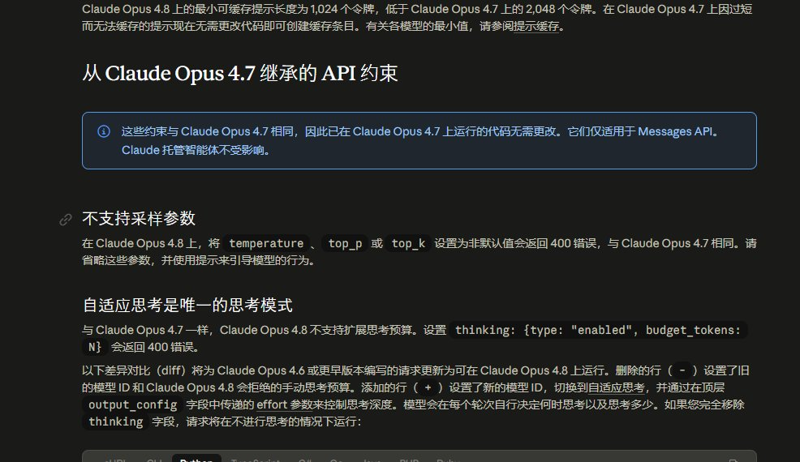

小雨 #SayKnowToLLM
@GptRainy
@woaitaoershi 日新月异啊。

超级飞行员
@woaitaoershi
突然发现一个问题，Claude code的模型默认温度竟然是1！！！
在我的认知里，编程这种工作模型的默认温度应该很低啊
于是我去问了问ai，他告诉我现在其实大家已经不怎么关注温度了，低温模型用于代码补齐已经是很久之前的旧“共识”了 https://t.co/g4S7g8SCl1